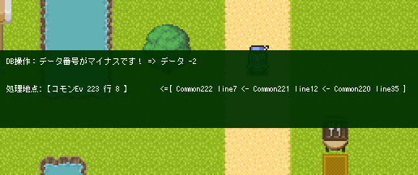
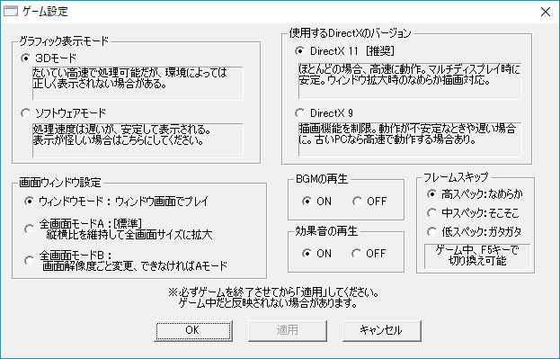

|
|||
|
（2022/08/08） Ver2.2961 Ver2.295～2.296がGoogleドライブの不審なファイル判定に引っかかったので再アップ 【全体の問題】 ・Ver2.295～2.296のGame.exeがGoogleドライブ上で マルウェア扱いされていたので、バージョン番号だけ変更して 全く同じ内容のまま再コンパイルしました（1行しか差がないVer2.294はセーフでした）。 このVer2.2961のGame.exeは、Googleドライブにアップしてもしばらくは 不審なファイル扱いはされないと思いますが、いずれまた不審なファイル扱いになるかもしれません。 中味が全く同じにも関わらずGoogleドライブへのアップ直後はマルウェア扱いされないことから、 ウィルススキャンのような処理で危険なアルゴリズムを検知されているわけではなく、 他の理由（通報など）で共有禁止にされている可能性もありそうです。 基本的に、「Googleドライブ」でのGame.exeを含むデータ共有は非推奨になりそうです。 可能でしたら他のサービスでのデータ共有を推奨いたします（OneDrive、DropBoxなど) （2022/06/13） Ver2.295 Ver2.294で判明したバグの修正 【ゲーム部 バグ修正】 ・【ピクチャ】特定の条件下でピクチャが1フレームだけ早く動くバグを修正 【エディター部 バグ修正】 ・【コモンイベント 検索】コモンイベントの検索ウィンドウを「空欄」のまま実行すると コモンイベントのメインウィンドウをクリックできなくなるバグを修正 （2022/05/09） Ver2.294 Ver2.293で判明したバグの修正 【ゲーム部 バグ修正】 ・【エフェクト】「画面のスクロール」にて、「瞬間」スクロールに設定しても 特定条件下で最低速度のスクロールになってしまうバグを修正。 【エディター部 バグ修正】 ・【コマンド入力ウィンドウ】環境によってコマンド入力ウィンドウの下部分が 見えなくなる場合があったようなので表示範囲を拡張。 ・【サウンド】「メモリから非使用中音声を全開放」を選択した後に「通常再生」を選ぶと 音量・周波数がグレーになったままで設定できなくなるバグ修正 （2022/04/19） Ver2.293 Ver2.291で判明したバグの修正 【ゲーム部 バグ修正】 ・【マップ表示】 48×48タイル使用時、特定条件のチップとマップイベントが移動時に点滅してしまうバグを修正。 ・【マップの基本設定】「遠景設定」で「ファイル名指定」するとき、 「遠景をマップにリンク」を選んでもマップにリンクしなくなっていたバグを修正。 ・【ゲームパッド操作】 「起動時にパッドのPOV入力が入りっぱなしだとPOVキーを無効にする処理」が こっそり入っているのですが、戻す処理がなかったので 「パッドのPOV状態がゼロになった時点で十字キーをOKに戻す」処理を追加。 ※パッドによってはPOV入力が入りっぱなしになる可能性があるらしいためこの処理を搭載しています。 【エディター部 バグ修正】 ・【チップ処理】「チップセットの切り替え」コマンドを「修正」するとき、 「チップ0」と「変数」しか選べなくなるバグを修正。 ・【マップイベントエディタ】マップイベントの「画像」を変更したとき、 マップ修正フラグが立たなかったバグを修正。 （エディタを閉じるとき、保存するか聞かれないまま終了していました） |
（2022/04/02） Ver2.291 アナログスティック、POV十字キー、タッチに対応。デバッグ機能の強化 【新機能】 ・【キー入力】 以下の受け付け機能を追加。 + アナログスティック取得機能を追加（ゲームパッド用） - （左右）スティック上下傾き - （左右）スティック左右傾き - （左右）スティック角度 - （左右）スティック傾き - ZL/ZRトリガー押し込み量 - Z軸値（DirectInput時のZL/ZR押し込み量の合計） + POV十字キー取得機能を追加（ゲームパッド用） - 4方向 - 8方向 - 上下・左右 - 上・下・左・右 + 複数タッチ認識機能を追加（現状はWindowsタブレット用。ブラウザ・スマートフォンに使えるかは不明です） - タッチX番目のX座標（-1ならタッチなし） - タッチX番目のY座標（-1ならタッチなし） - タッチX番目の追跡ID（タッチの「X番目」が変わったときにも同じタッチを追跡するためのID） ・【システム変数】システム変数に 「Sys134：POVｷｰで方向入力ｵﾝ？[1=ON]」、 「Sys135：左ｽﾃｨｯｸで方向入力ｵﾝ？[1=ON]」 を追加。 パッドの十字キーやアナログスティックを方向キーに連動させたくない場合は これらの変数に「0」を代入してください。デフォルト値は「1」です。 ※しばらく先のバージョンまでこのシステム変数はセーブされないため、 お手数ですがこれらのシステム変数の値はロードごとに再代入してください。 ・【エラー表示】 エラー発生時、エラー発生箇所からさかのぼってどこからどういう流れで イベントが読み込まれたか表示する機能が追加されました。  ・【システム文字列】システム文字列「SysS55：[読]Ev実行経路」を追加。 上のエラー表示と似たような形で、この文字列が呼び出されたコマンド位置までの 呼び出し経路を返します。 <見本> Ev0 line0 -> Ev0 Common3 line2 -> Ev0 Common1 line1 ※コモンイベント1の1行目で 「\sysS[55]」 で「文章の表示」をした例。 Evはマップイベント番号、Commonはコモンイベント番号、lineは行数を指す。 【ゲーム部 修正】 ・【エラー表示】 「並列イベント」のエラー発生箇所が検出できるようになりました。 （多少のずれが発生するかもしれませんが、前よりは助けになるはずです） ・【文字列操作】文字列の「キーボード入力」時、「自動キー入力」で キーコード「Enter（128）」の入力を受け付けて終了できるように修正。 入れたところまで反映される、時間制限式の文字入力イベントなどが作れます。 ・【ゲームパッド】Ver2.29のみDirectInput方式のコントローラ（PS4用など）が まったく受け付けできなくなっていた不具合を修正。 ・【キー入力】Ver2.29のみShiftキーとテンキーを同時押ししたときの挙動が おかしくなっていたバグを修正。 【エディター部のバグ修正】 ・【暗号化】BasicDataフォルダ内にアイコンファイルの000～999が存在せず、 icon1000以降のアイコンファイルだけが存在する場合にデータ暗号化すると、 \i[]の特殊文字によるアイコン読み込みができなくなるバグを修正。 ・【キー入力】Ver2.29のみ「マウスクリック・座標」の「クリック状態」を選んだとき、 各クリックのチェックボックスが全て入力不能になっていたバグを修正。 （2022/01/09） Ver2.28 タイルサイズ48x48に対応、ほか利便性アップ 【新機能】 ・【ゲーム設定】「タイルサイズ」に「48x48」を追加しました。 これで48x48対応マップチップ素材も使用可能になります。 【ゲーム部 修正】 ・【ピクチャ】ピクチャを複数「消去」する処理を大幅に高速化しました。 特に大量のピクチャをまとめて消去するときの処理が非常に高速化されます。 【例】ID 1～1000の連続した1000枚のピクチャを、1つの「ピクチャ消去 1～1000」コマンドで 削除するのにかかる処理時間の比較 Ver2.271(従来) 約 210 ms → Ver2.28(最新) 約 4 ms ※WOLF RPGエディター開発者の環境で、タイトルバーに表示されるイベント処理時間を比較 ・【パッド】「ゲーム中」に「ゲームパッド」を挿すとすぐ認識されるようになりました。 これはDXライブラリの更新によって搭載された機能です。 （従来はゲーム「開始前」に挿さないと認識されませんでした） ・【ウィンドウ最大化】F4キーを何度か押してウィンドウを「最大化」した場合だけ、 ボーダーレスウィンドウ（タイトルバーが出ない仮想フルスクリーン）の 全画面表示になるよう修正。 ※なおウィンドウ側の「最大化ボタン」を押した場合は「タイトルバーが表示されたまま」です。 F4を使わずボーダーレスにすると最大化からの戻し方が分からなくなる場合があるためです。 【エディター部のバグ修正】 ・【マップ選択】一度マップを読み込むと、マップ選択画面でおこなえる 「マップ削除」によるShift押しながらのマップファイル削除が 正常に実行できなくなる不具合を修正。 ・【変数呼出値/特殊文字一覧】 「イベントYの座標を取得」内の項目が一部抜けていたのを修正 【ゲーム部のバグ修正】 ・【ゲーム設定】「ウィンドウ非アクティブ時の挙動」を「処理を停止」にしている場合、 ゲームを非アクティブにしていると、アクティブに戻したときに システム変数の「Sys29：[読]プレイ時間(秒数)」と 「Sys30：[読]プレイ時間(ミリ秒単位)」がしばらく正しい値を返さないバグ修正 ・【DB操作】「データ名」を「名前指定」している「DBへの書き込み処理」が 正常に動作しない可能性があったのを修正。 ・【マップイベント】マップイベントの条件判定にて、マップ移動した直後だけ 「前マップのセルフ変数」を参照してしまう可能性があった問題を修正 （マップIDの更新が一瞬遅れるバグだったので、それに付随した問題も修正される期待があります） ・【システム変数】Sys52～54のキーボード用キーコンフィグ変数に「テンキーの値」を入力したとき、 「Sys1～4:(決定/ｷｬﾝｾﾙ/ｻﾌﾞ)キー名[ｷｰﾎﾞｰﾄﾞ]」にキー名が表示されないバグを修正 ・【システム変数】上記修正の副作用でキーボードの1～9キーが???と表示されてしまうバグが出ていたのを修正 [Ver2.281追記] ・【画面最大化】3Dモードでなく「ソフトウェアモード」でゲーム画面を「最大化」した場合だけ ゲーム画面が左に寄ってしまう現象を修正。 （DXライブラリ側で対応していただきました） ＜ゲームの動作バージョン別仕様＞ 以下の仕様がVer2.28を境に変更されます。 戻したい場合は『Game.exe動作バージョン調整』で調整可能です。 ・【選択肢】タイルサイズが「40」のとき、選択肢ウィンドウの上下の余白が不均等だったのをVer2.28で修正。 もし「すでに前の状態に合わせて作っていた」などの理由で以前の挙動のまま使いたい場合は、 『ゲーム基本設定』から、『Game.exe動作バージョン調整』を 『旧Ver2.27時点の挙動で動作』に設定してください。 【基本システム修正】 Ver2.28 に更新。情報をいただいた修正箇所を取り入れさせていただきました。 貴重な情報、誠にありがとうございます。 ・特定の条件下で仲間にカウンター攻撃をするバグを修正[コモン165/16行・706行] ・移動時にサンプルアイテム「ヒールの巻物」を使っても回復しないバグを修正（最も効果が出せるキャラが使うように）[コモン119/180行] ・状態異常変化の全員を対象とした分岐条件にミスがあったのを修正[コモン9/72行] ・敵キャラの追加処理の分岐条件にミスがあったのを修正[コモン29/17行] ・装備変更画面のパラメータの増減表示が正しくないバグを修正[コモン109/127～132行] ・戦闘中のステータス画面の点滅が止まらなくなることがあるバグを修正[コモン159/144行 166行 195行 222行] （2021/07/01） Ver2.271 Ver2.264にあった致命的なバグ修正・SEチャンネル機能の搭載 【重大なバグ修正】 ・【ピクチャ】 特におかしな操作をしていないにも関わらず、時間の経過で 「～.pngを読み込みましたが画像データにできませんでした。メモリ不足の疑いがあります」 というエラーが出続けてゲームが進行困難になる不具合の修正を試みました。 ※このバグはVer2.264のGame.exeでのみ発生していたと考えられます。 【新機能】 ・【サウンド】SE（効果音）の「チャンネル」機能を搭載。 - たとえば「1チャンネルと2チャンネルでそれぞれSEを再生」した後に、 「1」チャンネルを指定して「SEの停止」をすると、 「1チャンネル側のSEだけ停止させ、2チャンネル側はそのまま再生を続けさせる」 ということができます。 - 「停止」する際にチャンネル「-1」を指定すれば、 「全チャンネル」のSEを停止させることができます。 - 従来のSEは「0」チャンネルで再生されるものとして扱われます。 → 使用例としてはボイス関連が有力で、例えば格闘ゲームで 「(打撃音などを止めずに)同じキャラのボイスが重複して再生されないようにする」 といった用途で使える場面が多いと思います。 ・【文字列操作】 隠し機能として「ファイルの存在確認」ができる機能を追加。 使い方は以下の通りです。 1.「文字列操作」コマンドで「に↓のファイル内容読込」を選ぶ。 2.「手動入力」欄に「<<GET_FILE_EXIST>>Data/Graphic/Edy.png」などと入れることで、 「Data/Graphic/Edy.png」が存在するなら「文字列変数」に「1」が、 存在しなければ「文字列変数」に「0」が格納される。 ※画像などのバイナリファイルを読む場合、「ファイル内容読込」できるか否かで 存在を確認するより、この機能の方が安全に動作するはずです。 【エディター部 バグ修正】 ・【ピクチャ】（マップイベントでなく）「コモンイベントウィンドウ側」だけ、 「ピクチャ」コマンドの「読込」時に動画拡張子（avi,mpg,ogv,mp4）のファイルが 一覧に表示されなくなっていたバグを修正。 【エディター部 機能追加】 ・【リソース】 WOLF RPGエディターを翻訳して公開してくださる方がいらっしゃったので、 リソースDLLだけ別にした「Editor.Lang.dll」を作成・公開しました。 このDLLファイルをEditor.exeと同じ場所に置くと「DLL側」の「リソースデータ（フォームや文字列情報）」が 優先して読み込まれます。 （Ver2.27でDLLが読み込めないバグがあったためVer2.271で修正しました） → 何ができるかというと、DLLが読み込めるリソースエディタで「Editor.Lang.dll」のフォームなどを「翻訳」して DLLをEditor.exeの場所に置くと、Editor.exeの「翻訳」が可能になります。 DLLで分離されていれば、本体のバージョン変更があっても修正が少なく済むでしょう。 ※無償であれば、「Editor.exe」と「Editor.Lang.dll」をひとまとめで配布しても構いません。 【ゲーム部 バグ修正】 ・【タイトルバー】テストプレイ時のタイトルバーに出る「マウス座標」を、より左に表示するよう修正。 （環境によっては見えなくなる場合があるため） ・【ピクチャ・動画再生】音量を再調整。 「同じogv動画をBGMとして読み込んで再生したとき」と、 「ピクチャで動画再生する場合」とで音量比較し、 少しだけピクチャ動画の方が大きくなるよう調整してみました。 → なお「mp4」形式の再生だけは内部的にWindows側の再生機能を使っている？ らしく、 もしかしたら音量などが環境依存になる可能性があるので、 安定を求める場合はなるべく「ogv形式」を使ってください。 （2021/04/20） Ver2.264 動画再生機能を追加・細かい安定性アップ 【新機能】 ・【ピクチャ】 動画再生機能を搭載。 ピクチャコマンドで「動画ファイル」を読み込むと、ピクチャ同様に動画を再生することができます。 ◆動画再生サンプル↓ - 読み込める動画は「avi、mpg、ogv、mp4(H.264のみ)」の4つです。 マニアックなフォーマットですが、「ogv」形式が将来的にも安定して使えるようです。 （mp4はWindows機能で表示しているのでアップデートで出なくなる可能性があるとか） - 動画の音声は、効果音のように再生されます。BGM音量補正の影響を受けます。 - 動画ファイル名に「_loop.」か「_LOOP.」が含まれていれば その動画は自動ループします。 - セーブ・ロードにはまだ対応していません （動画ピクチャ再生中にセーブ後、それをロードすると再生停止状態になります） - 再生開始時やシーク時にどうしても30～40ミリ秒程度止まってしまうようなので、 頻繁に表示したり短時間ループするエフェクトとして自然に使用するのは難しいと思います。 ・【変数操作＋】 「ピクチャ」の取得内容に以下を追加。 - 動画再生位置[ms] - 動画総再生時間[ms] ※得られるのはogv、mp4形式のみ ・【エフェクト】 「ピクチャ」エフェクトに以下を追加。 - [動画]再生速度変更機能[%] ※再生速度を「0」にすると一時停止になります。 - [動画]再生位置変更[ms] - [動画]音声ボリューム変更[%] ・【文字列操作】 隠し機能として「音声ファイルの再生時間」をミリ秒で得られる機能を追加。 使い方は以下の通り。 1.「文字列操作」コマンドで「に↓のファイル内容読込」を選ぶ。 2.「手動入力」欄に「<<GET_SOUNDTIME>>Data/SE/effect.ogg」などと入れることで、 「文字列変数」に「Data/SE/effect.ogg」の「再生時間（ミリ秒）」が文字列として格納される。 （あとは「変数操作」でその文字列変数を数字変数に格納してご利用ください） 【エディター部 バグ修正】 ・【暗号化】 2GB程度の巨大なファイルを暗号化しようとすると、 Editor.exeがクラッシュすることがある問題への対応を試みました。 （なお4GB以上のサイズだとやはりクラッシュすると思います。 さすがにそこまではサポートできないので、フォルダの「個別暗号化」の方で うまく行きそうでしたらそちらをご利用ください） ・【エフェクト】「マップ」のエフェクトを選んだ際、エフェクト名のコンボボックスが 正常でなくなるバグを修正 (2.26～2.262のみで発生) 【ゲーム部 バグ修正】 ・【起動時】 サイズの大きい暗号化フォルダがあると、起動時にずっと停止状態に なってしまうことがある現象への修正を試みました。 ・【グラフィック】 画像読み込み時、正常に読み込みできなかった場合の処理を修正。 ・【サウンド】音声再生したとき、「音声と認識できないファイル」を無理に読み込んだ場合に、 Windowsのサウンドデバイスが未設定だと常にエラーが出てしまうので、 そもそもエラー表示されないよう修正。 ・【文字表示】 文字列ピクチャ・文章表示が文字化けすることがあるバグへの対応を試みました。 ・【特殊文字】ルビの特殊文字\r[,]のうち「]」なしで特定の入力をした場合、 クラッシュするバグを修正(2.26～2.261のみで発生) ・【ピクチャ】動画再生時、動画ピクチャ側の音量を下げるとすぐ無音になってしまい、 BGM側の音量バランスと全然合っていなかったのを修正しました。 完全一致ではありませんが、少し数値を減らしただけで無音になることはなくなります。 (2.26～2.263のみで発生) （2021/02/27） Ver2.255 Ver2.24に対し、最新「Micorsoft IME」使用時に発生していた文字入力の不具合に緊急対応しました。 【大きな注意点】 ・【暗号化方式の変更】 ライブラリを最新にした都合で暗号化方式が変わったため、 過去のバージョンとは【暗号化ファイルの互換性がなくなりました】。 特に影響が出るのがオンラインアップデートで、 Ver2.25とそれ以前の暗号化ファイルが混ざっていると ゲームが正常に動作しなくなりますのでご注意ください。 ・[Ver2.253で追加修正] 【大きいサイズの文字を使ったときにクラッシュする現象を修正】 ライブラリの最新化により、大きい文字や多数の文字を使った場合にフォントキャッシュがあふれて クラッシュする状況が発生していたため、以下の2点でフォント表示関係の制約を厳しくしました。 - 最大フォントサイズを、画面サイズ320x240時は「64」まで、それ以外の画面サイズでは「128」までに制限。 大きい文字サイズを指定していた場合、Ver2.253以降では文字が小さく表示される場合がございます。 （旧バージョンでは最大フォントサイズを200（320x240時）あるいは400にしていました。 文字を大きく表示したい場合は、文字列ピクチャの「拡大率」を上げて表示してください） - フォントキャッシュ文字種を300から200に減少させました。 → つまり「画面内に一度に表示される文字の種類」が200種類までなら軽快に動作します。 フォントサイズやフチ（\E）の有無が違うと、「別の文字種」と認識されます。 ・[Ver2.255で追加修正] 【環境依存のフリーズバグ】 Ver2.25～2.253において、Windows7～8上にてゲームを起動した後、 何もしなくても10数分後に「応答なし」になることがある重大な不具合を修正 【新機能】 ・【変数操作＋】 「その他」に「消費メモリ量（MB）」「残り物理メモリ量（MB）」を追加。 巨大な画像を複数読み込んだ際にフリーズするので残りメモリに応じて分岐させたい、 メモリ負荷が高そうな状況を確認したい、など、 メモリ不足に起因しそうなバグを避ける用途で使えると思います。 ・【暗号化ファイル】 起動時の空き物理メモリ「60％以内」の範囲で .wolf形式の暗号化ファイルを可能な限りメモリに先読みするよう修正。 十分なメモリがある環境ならば小さなファイルの読み込み遅延がほぼゼロになります。 (これだけVer2.255で追加修正) → ただしメモリに読み込まれるためには以下の条件を満たす必要があります。 - 暗号化フォルダが1つ128MB以下であること（丸ごと・個別、どちらも）。 【エディター部 修正】 ・【暗号化】ゲームデータ作成時の暗号化処理が変わりました。 ・【場所移動】場所移動先の選択画面でX0の列が選択できなくなっていたバグを修正 (これだけVer2.25→2.251で追加修正) 【ゲーム部 修正】 ・【暗号化】Ver2.24以前で作られた暗号化ファイルが読み込めなくなります。 ・【使用可能メモリの拡大】 64bitのOSで起動した場合は最大4GBまでメモリが使えるよう修正しました。 32bitOSなら従来通り最大2GBまでです。 ・【文字列操作】キーボード入力時、最新のMicrosoft IMEで正常に文字列が入力できないバグを修正 → 半角文字が2重に入力されたり、日本語入力時に余計な半角文字が入ったりしていました。 詳しくは以下の動画を参照してください。Ver2.24以前で起きる問題の再現映像です。 ＜途中バージョンの修正＞ ・【音声】LOOPLENGTHを含んだ音声ファイルが正常にループしなくなっていたバグを修正 (Ver2.25～2.251のみで発生) ・【画面サイズ】Windows側のテキストサイズ設定が100％以外の場合、 起動時に画面サイズがちょうど1.0倍にならずに画面がガタガタに なってしまうことがある現象の修正を試みました（Ver2.25～2.253のみで発生）。 ・【文字列操作】「キーボード入力」で256文字以上を代入しようとすると フリーズするバグが発生していたので修正(一時公開のVer2.254のみで発生) 【注意！ Ver2.21以前をお使いの方が2.22以降を導入する際にデータ修正が必要になる箇所】 ・【文字列ピクチャ】 以下の条件を全て満たす「文字列ピクチャ」の表示座標が Ver2.22以降のGame.exe導入で少しずれてしまうため、調整が必要になります。 - 「ゲームの基本設定」にて、「フォントのアンチエイリアス」が 「無し＆倍角」に設定されているゲーム内。 - 文字列ピクチャにて「\i[?]によるアイコンや\img[?]の画像が行末に存在」しており そのピクチャの基本位置が「中心」「右上」「右下」位置のいずれかに設定されている。 上記の条件下では「行末のアイコンや画像の横サイズが半分」として認識されており 文字列ピクチャの横サイズが本来より小さめに計算されてしまっていたため、 Ver2.22の導入で表示座標が少しずれてしまう場合があります。 お手数をお掛けして申し訳ございませんが、必要に応じて調整をおこなってください。 （2018/06/22） Ver2.24 Ver2.22に対し、緊急で以下の1点のみ追加修正しました。 【エディター部 バグ修正】 ・【ピクチャ】自由変形のY座標入力欄でCtrl+Aを押すとフリーズするバグを修正。 （2018/06/06） Ver2.23 Ver2.22に対し、緊急で以下の2点のみ追加修正しました。 【ゲーム部 バグ修正】 ・【サウンド】SEとしてWAVファイルを再生した際、ループ情報が含まれていると SE（効果音）なのにループしてしまうバグを修正。 → WAVファイルをご利用になっていない場合は問題ございません。 ・【文字列操作】マップ並列イベントでキーボード入力を受付中にマップ移動などをおこなうと コマンドによる「キー入力受け付け」を一切受け付けなくなるバグを修正。 （2018/06/01） Ver2.22 強制終了系バグの修正と描画周り安定化の修正を先行して行いました。 【新機能】 ・【Config】 描画に関するオプションを追加しました（Config.exeで設定可能） - 「使用するDirectXのバージョン」が「DirectX 11」と「DirectX 9」から選べるようになりました。 「DirectX 11」にすると「ウィンドウ拡大時になめらか拡大」できます。 ※3Dモード、かつゲーム設定側でピクチャ拡大が「なめらか＆ぼんやり」に設定されている場合のみ。 - 「全画面モード」をA、Bの2種に分けました。 ・Aモード：「縦横比を維持して全画面サイズに拡大[標準]」 ・Bモード：「画面解像度ごと変更」 全画面時に正常に画面表示されない方がいらっしゃるようなのでその気休め対策です。  【ゲーム部 仕様変更】 ・【ウィンドウ拡大】 F4キーを押したとき、ウィンドウサイズが 1倍→2倍→（以降、+1倍にできるなら+1倍ずつ）→全画面→1倍→2倍…… と切り替わるように修正しました。 ・【文字列】フォントキャッシュを約300文字種分まで記憶するようにしました → 「サイズ・フォント・フチの有無」が同じ文字が最新300文字まで記憶され、 表示が高速化されます。 【エディター部 仕様変更】 ・【テキスト入力】 「Ctrl+A」で文章を全選択にする処理が有効なテキストボックスにて、 ShiftやAltも一緒に押しながらCtrl＋Aキーを押した場合は全選択しないよう修正。 （一部の外国語を入力する際、Alt Grキーで入力できなくなっていたらしいため） 【ゲーム部 バグ修正】 ・【ピクチャ】文字列ピクチャでアイコンを使用したとき、一定条件でアイコンの 縦サイズが2倍以上に引き延ばされてしまうことがあるバグを修正。 ・【ウィンドウ拡大】 画面サイズ変更後、ウィンドウのタイトルバーに出る 「画面が停止した場合は～[消去まで0秒]」 のメッセージが消えずにいつまでも表示されてしまうバグを修正。 ・【セーブデータ】 Ver2.10以前の古いGame.exeでセーブした文字列の中で、 \f[？]で設定されていたフォントサイズが、Ver2.20以降のGame.exeで開くと 64倍のサイズになってしまっていたバグを修正 → これの影響で、旧Verのセーブデータの読み込みに 異常な時間がかかる現象も発生していました。 ・【システム変数】 Sys71:マウスX位置、Sys72:マウスY位置にマウス位置を格納し直すたびに 画面上のマウス座標が1ピクセルずつずれてしまうことがあったバグを修正 ・【文字列ピクチャ】「ゲームの基本設定」でフォントのアンチエイリアスが 「無し＆倍角」になっている時、行末にある \i[]や\img[]による画像のサイズが正しく計算されていなかったバグを修正 （【Ver2.22の導入時にデータ修正が必要になる箇所】で述べた通り、修正が必要です） ・【場所移動】 場所移動コマンド使用時、「対象」を変数で指定して 「-2」を対象に実行したとき、「主人公」がマップ0番に場所移動させられるバグを修正。 （現在は同じマップ内に移動するようになりました） ・【F11処理】テストプレイ中、F9キーなどを押した後にF11を押すと 更新画面の文字サイズが大きくなってしまうバグを修正 ・【キーの禁止】キーの禁止でPrintScreenを禁止してもスクリーンショット撮影が できてしまっていたバグを修正。 【エディター部 バグ修正】 ・【コモンイベント】「変数」や「このコモンから±X個上下のコモンEv」で 指定していた「コモンイベント」コマンドを編集しようとしただけで まれに強制終了するバグの修正を試みました。 ・【マップ選択】 マップツリー上で、マップファイルが設定されていないマップに 「コピーしたマップ」を貼り付けしようとするとフリーズし、 強制終了するしかなくなってしまうバグを修正。 ・【マップ】 1マップにイベントを約1024個以上設置しようとすると強制終了するバグを修正。 今は5120個まで置けるようになり、オーバーしそうになるとエラーが表示されます。 ・【ファイル・画像選択】 ファイルや画像の選択を行う際、ファイルの拡張子が大文字だと 一覧に表示されなくなっていたバグを修正。 ※今回おこなわれたEXEのバグ修正は、重大なものか低コストで修正できるもののみです。 「バグ報告スレッド12 >>72～」以降のものに未対応バグや要検証事項が 多数残っているため、追ってその修正もおこなっていきます。 |
| （2017/04/14） Ver2.21 一部バグの先行修正を試みました。 【プレイに影響する現象】 （2018/5/17） ・【全画面化】 「全画面時」の描画処理がVer2.10までと異なり 「ゲーム設定」の「ピクチャ拡大縮小時の描画方法」に 依存するようになっています。 つまり、「くっきり＆ガタガタ」にしていると全画面化を行った際も「ガタガタ」で拡大され、 「なめらか＆ぼんやり」にしていると全画面化を行った際も「なめらかぼんやり」で拡大されます。 → ドット絵重視の場合は「くっきり＆ガタガタ」、そうでないゲームの場合は「なめらか＆ぼんやり」に 切り換えていただいた方が見栄えがよくなると思いますので、必要に応じて設定を切り換えてください。 【ゲーム部 仕様変更】 ・【タイトルバー】描画ms（ミリ秒）とイベント処理時間msを小数点1桁まで表示するように修正。 ・【マップ描画】描画ms（ミリ秒）とイベント処理時間msを小数点1桁まで表示するように修正。 【ゲーム部 バグ修正】 ・【アイコン】\i[?]や\img[?]で表示するアイコンや画像が、タイルサイズやゲーム画面サイズ、 フォントの「倍角」オンオフに応じて縦方向に伸縮することがあったバグの修正を試みました。 |
| （2017/03/22） Ver2.20 ゲーム画面サイズの追加や、画面サイズとチップサイズを個別に指定可能になりました。 【新機能】 ・【ゲーム基本設定】新たな「ゲーム画面サイズ」が選択できるようになりました。 320x240（倍）・640x480・800x600・848x480（16:9）・854x480（16:9）・960x720・960x540（16:9）・ 1024x768・1024x576（16:9）・1280x960・1280x720（16:9） から選択可能です。 ・【ゲーム基本設定】「タイルサイズ」と「ゲーム画面サイズ」を個別に設定できるようになりました。 タイルは「32x32」でゲーム画面サイズは「1280x720」といった設定も可能です。 ・【ゲーム基本設定】「ゲーム内の２バイト文字の言語」に「１バイト文字のみ[英語など]」を追加。 英語など、完全に1バイト文字だけで実行するゲームの場合はこれを選択してください。 ・【ゲーム基本設定】「ゲーム内の２バイト文字の言語」内に「システム言語」の設定を追加。 海外展開時など、タイトルバーやエラー文などを英語にしたい場合は「英語」にしてください。 ・【システム変数】システム変数「Sys115:Game.exeバージョン（x100）」を追加。 Game.exeのバージョン番号の100倍の値を返します。今回なら「220」です。 → あまり使わないと思いますが、配布するコモンイベントを 指定バージョン以降のみに対応させる場合などに使用できます。 ・【システム変数】システム変数「Sys116：画面サイズX」「Sys117：画面サイズY」を追加。 ゲームの画面サイズを返します。 ・【システム変数】システム変数「Sys120：ﾘｾｯﾄ履歴 0=ﾅｼ/1=F12/2=ｺﾏﾝﾄﾞ」を追加。 起動後に「F12リセット」あるいはコマンドで「タイトルに戻る」したのを検出することができます。 ・【ゲーム画面】プレイヤーがゲームウィンドウ端をドラッグすることで、 ウィンドウサイズの倍率を自由に変更できるようになりました。 ・【サウンド】ツクールシリーズと同じく、音声ファイルの「LOOPLENGTH=～～」機能に対応。 今後は音声ファイルの最後をカットしなくてもループが可能です。 ・【ルビのサイズ】ルビ振りの特殊文字\r[～,～]に使われるルビの文字サイズを システム変数「Sys23：ルビのフォントサイズ」で設定できるよう修正 ・【デバッグウィンドウ】F3キーを押すたびに、ゲーム途中でもデバッグウィンドウ表示の有無を 切り替えられるよう修正。 ・【デバッグウィンドウ】ボタンを押して「ログ保存」できるように修正。 （F3キーによる出力ができなくなったため） ・【サウンド】「メモリから未使用音声を全解放」機能を追加。 ・【エフェクト】 スクロール移動速度に、32倍速、64倍速を追加。 ＜エディタの新機能＞ ・【コモンウィンドウ・セルフ変数使用状況】 新たに「未使用分だけリセット」ボタンを実装 ・【コモンイベント・破損対策】コモンイベントファイル（CommonEvent.dat）が破損していた場合、 復旧可能な部分まで抽出して保存し直す処理を追加。 （例：コモン80以降が破損していた場合、コモン79までを抽出して保存し直します） ・【コモンウィンドウ・検索機能】 「コモンイベント名のみ」の検索オプションも付けました。 ・【自動バックアップ】「DATファイル自動バックアップ機能」を追加。エディターオプションから設定可能です。 エディタの毎起動時、Basicdata内のdatファイルだけをバックアップフォルダに1段階コピーします。 データが壊れてエディタが起動しない場合や、致命的な間違いをおかした場合などに便利です。 バックアップは最大で5バージョン前まで保存できます。 例：「Data/Basicdata/AutoBackup3/」フォルダに3回前に起動したときのバックアップファイルが 保存されています。「AutoBackup1」なら今回起動したときのバックアップです。 また、「毎月1日と15日に定期保存」されるモードも選べます。 例：2016年の12月6日に起動すると「Data/Basicdata/AutoBackup_2016_12_01/」という フォルダが作られ、DATファイルがバックアップされます。 15日以降なら「Data/Basicdata/AutoBackup_2016_12_15/」になります。 ＜ゲームの動作バージョン別仕様＞ 以下はゲーム基本設定の「動作バージョン調整」を「最新」か「Ver2.20以降」に設定した場合に反映されます。 ※Ver2.10以下に設定すると従来通りになります。 ・【文字表示】 フォントサイズより大きなアイコンを使い「\i[??]\ay[0]～～」と入力すると 「～～」部分の文章のY座標が0になります。 ※2.10以前では微妙にY座標0になりませんが、それに合わせて作っていた場合、最新版の導入によって 文字の縦位置がズレると思います。その場合は「Ver2.10の挙動」に切り換えてみてください。 ・【文字表示】Ver2.20の挙動から使用可能なフォントサイズの制限が最大400ピクセルまで拡張されます。 ※「Ver2.10以前の挙動」にするとフォントサイズはこれまで通り100前後以下に制限されます。 この制限は、古いWindowsで大きなサイズを表示しようとするとクラッシュすることがあったのを 回避する目的で設定されていました。なお今でも500以上にしようとすると止まるようです。 ・【音量】 DXライブラリ側で新たな音量設定が行われたため、BGM音量が 音量値の減少に応じて、なんとなく数値通りに減っていく聞こえ方になります。 ※「ゲーム基本設定」でGame.exe動作バージョン調整を「Ver2.10の挙動」以下にすると 以前通りの音量で再生されますが、これまでの音量は最小値近くでもだいぶ大きく聞こえたりして おかしかった気がするのであまりおすすめしません。 ・【動作指定】「主人公から離れる」「逆を向く」を行った場合、従来は4方向移動しかしなかったのを 8方向に移動するよう修正 ※「Ver2.10以前の挙動」に戻すと四方向移動のみになります |
|
【ゲーム部 仕様変更】 ・【暗号化】 Ver2.00、Ver2.10時点の暗号化データも読み込めるように修正。 ・【ゲームデータ】暗号化方式がVer2.10から変更されました。 ・【多重起動】別のゲーム名なら複数の「Game.exe」を同時起動できるよう修正。 （従来は別ゲームでもGame.exeを2つ以上立ち上げることができませんでした） ・【ジョイパッド】POVキー（アナログスティックと十字キーがある場合の十字キー）を 方向キーとして認識するように修正。 XBOXコントローラの後ろトリガー部分を認識するよう修正 ・【システム】Alt+Enterの全画面化が使えなくなりました。 代わりに、F11キーに全画面化を割り当てました （F11は非テストプレイ時のみ有効、テストプレイ時ではShift＋F11で全画面化切り換えができます） ・【システム変数】Sys84:画面解像度、は320x240、640x480、800x600以外の画面サイズなら －1を返すよう修正。 ・【サウンド】ライブラリの更新により、高い数値の「周波数」に設定して再生してた音が 元よりさらに高く聞こえる場合があります。これは周波数の上限値が増えたためです。 → たとえば、周波数200超に設定した音が、以前より高く聞こえる可能性がございます。 その場合は「200」に設定すると従来通りに聞こえると思います。必要に応じて調整してください。 ・【画面】フルスクリーンにしたとき、16:9のモニターでもゲーム画面解像度が4:3ならなるべく 端を黒帯にして4:3で表示されるようになります。ライブラリ側の更新による機能です。 ・【アイコン】使用可能なアイコン番号を1000～9999にも拡大。 （3桁の場合のファイル名はicon001～999.pngのままです） ・【リセット】テストプレイ時のみ、F12リセット時に文字色やアイコンの変更・追加分を反映するよう修正 ・【特殊文字】 \mx \my \ax \ay の限界値が±1000から±5000まで拡張されました。 ・【乱数】 「Sys110：現在の乱数のシード」に0を代入すると、以後ずっと乱数が機能しなくなるので シード値が0になった場合は自動で新たなシードを再生成するよう修正 ・【エラー】 緑帯エラーが出た場合、「Game_ErrorLog.txt」ファイルにエラー文を出力する機能を追加 ・【画像】F12リセット、あるいは「タイトルに戻る」したとき、ピクチャやキャラクター画像が メモリから解放されるように修正。ダウンロードした画像などにおいて、 「同じファイル名だが中身が変わった画像」を再読込できない問題があったため。 ・【特殊文字】\-[？]の数値がマイナス10くらいになると数値が反転してしまっていたので、 ±100の値まで反映されるよう修正。 ・【システム文字列】システム文字列1～3で取得できるキー名について、 キーコード139「;」151「,」246「:」の3つの名前を全角から半角に修正。 ・【画面】 Game.exe起動時、マウスカーソルのある場所のディスプレイを自動判別して そのディスプレイにゲーム画面を表示するよう修正。ディスプレイ2つまでの環境に対応。 （ディスプレイが3つ以上の場合はGame.iniにディスプレイ番号として 「Display_Number=3」などと指定することで指定可能です） ・【ピクチャ】総スプライト数が約32000を超えると正常に描画されなくなるため、 ピクチャ表示時にその量をオーバーした際に警告を表示し、新たに描画しないよう修正。 ・【サウンド】 BGSでMIDIファイルが再生されそうになった場合にエラーを出すよう修正。 MIDIファイルを再生しようとした場合、不具合に繋がる可能性がありました。 ・【文字列操作】 Basicdataと付くフォルダ内に.datファイルや.projectファイルを出力しようとした場合、 エラーになるよう修正（データベースファイルなどが上書きされてしまう可能性があるため）。 ・【セーブ】Save以外のセーブ先のフォルダを文字列で指定したとき、フォルダを自動生成するように修正。 ・【文字列操作】 <をファイル↓に出力>コマンドでテキストファイルを出力する際、 フォルダを自動生成する機能を追加 ・【エフェクト】フラッシュの色指定が変だったバグを修正 元々数値が最大100までしか有効になっておらず、100超の値だと オーバーフローして色指定がおかしくなるようでした。 数値に対する効果はそのままですが、100超に設定してあった場合の挙動が 変化している可能性があります。 ・【画面拡大縮小】ウィンドウサイズを拡大縮小したときにグラフィックスドライバの問題で 画面更新が停止する場合があるらしいため、画面サイズ変更時はタイトルバーに15秒間 「画面が停止した場合は、『F4:元サイズ』か『F11：全画面化』を押してプレイを続けてください」 という警告文を表示するよう修正。 ・【ダウンロード】ダウンロード時、「一時ファイル『～_TMP』ファイルが作成できなかった」 というエラーが出ないように修正。 → もし書き込めない_TMPファイルが作られていた場合は、_TMP1や_TMP2などを作ります。 【ゲーム分 バグ修正】 ・【画面】フルスクリーンとウィンドウモードをゲーム中に切り換えると画面更新頻度が 最大45FPSほどに下がってしまうバグ修正。 ・【描画】Windowsの拡張スクリーン使用時、画面が表示されなくなる場合がある不具合が減少。 （DXライブラリ側の更新によるもの） ・【マップ描画】800x600（40pxタイル）環境下で▲チップの表示優先順位が想定外に前後してしまうバグを修正。 ・【フルスクリーン化】ゲーム中にフルスクリーンにすると以降のトランジションが機能しなくなるバグ修正。 ・【フレームスキップ】Config.exeで「処理の重さ」を「高」以外にしたり、プレイ中にF5で変更しても、 終了したりロードしたりすると「高」に戻ってしまうバグを修正。 ・【遠景】文字列で「SysS30：遠景の画像ファイル名」に「BG1.jpg(改行)0(改行)0(改行)3」などと入れてセーブし、 ロードするとエラーが出る可能性があった不具合を修正。 ・【フォグ】放置し続けているとフォグの座標がオーバーフローして 表示が変になる可能性があったバグを修正（たぶん）。 ・【ゲーム基本設定】「ゲーム内の2バイト文字の言語」まわりの挙動を修正しました。 日本語以外でのGame.exeでの安定性が少しだけ向上していると思います。 ・【音量】再生中に「Sys95：再生中BGM音量」を変更すると音量が変更されるが、 その後に「Sys100：BGM音量補正」を変更するとSys95の音量値でなく 「再生開始時」の音量をベースに補正がかかった音量になってしまうバグを修正。 ・【文字描画】大きなフォントを多数表示させるとエラーになる可能性があったバグを修正。 ・【影画像】「～$.png」の非分割キャラ画像に6x4分割の影画像を使い、 途中でキャラ画像の方を「$」と「$なし」同士で切り換えたに「24分割された影画像」が そのまま表示される現象があったため、起きにくくなるよう修正。 ・【イベント描画】タイルセットで下半分が半透明になるよう設定したタイル上にキャラがいる場合、 そのキャラにはエフェクトの点滅が適用されなくなるバグを修正。 ・【イベント画像】ループ設定したマップに大型のグラフィックを設定したイベントを設置したとき、 主人公の場所によって表示されない状況が減るよう修正。 ・【イベント画像】キャラクターの移動速度を最低値にしたイベントに、～T.png及び～TX.pngの画像を マップイベントとして使用すると移動時に一瞬カクつくバグを修正。 ・【システム変数】「Sys17～19：選択肢SE番号～」に「-1」が設定されている場合、 そのSEが再生されようとすると全SEが止まってしまう（SEの「停止」と同じになる）バグを修正。 ・【フォント】画面サイズが320x240以外（640x480、800x600）の時に 「ゲームの基本設定」→フォントのアンチエイリアスを「無し&倍角」にして \i[]か\img[]を使うと、呼び出されたアイコンが縦に伸びるバグを修正 ・【変数操作】「整数をコモンセルフの文字列域に代入しようとしました」 のエラー時に エラー行が表示されなかったのを修正 ・【変数操作+】下のレイヤーに通行不可のマップチップを、 上のレイヤーに1/4ずつ通行可能にさせたマップチップを置いて 変数操作+の「位置X・Yの通行可能（タイル）」を「精密座標」で得ようとした場合、 正しいタイル通行可能状態が得られなかったバグを修正。 ・【変数操作＋】歩行グラフィックファイル名の末尾にT.pngなどがつく素材を使用した際、 変数操作＋でキャラクターの「アニメパターン」番号を正確に取得できなかった現象を修正。 ・【文字列操作】 並列イベント内で、変数呼び出し値9100009などを使用し、 存在しないイベントIDの画像名を間接読み込みしようとすると強制終了するエラーを修正 ・【文字列操作】＜の指定文字以降を切り出し＞がダメ文字が入っている文字列に対して 正しく動作しないバグを修正。 例：「あい[ゾル]うえお」と入れた文字列から「]」以降を切り出すと「ル]うえお」が出ていました 期待通りなら「うえお」のみ。 ・【文字列操作】テストプレイ中、文字列のキーボード入力中にF11でデータの再読み込みを行った後に 再びキーボード入力させるとイベントがフリーズするバグを修正 ・【DB操作】 ゲーム中のCSV出力で、出力データ数の指定が機能していなかったバグを修正 ・【DB操作】 CSVファイルの読み込み時、1項目のデータ量が10KB以上になると バッファオーバーランでクラッシュが発生する可能性があったバグを修正 ・【DB操作】コモンイベント内にタイプ番号マイナスを指定したコマンド（DB[-99:0:0] = 0など）があると 起動時にクラッシュする場合があるバグへの対処を試みました ・【DB操作】特殊文字をCSVから読み込んだときにフリーズする問題が起きにくくなるよう修正 ・【DB操作】 データ番号を変数で指定して「全項目初期化」を実行した際、 変数の値がマイナスだとそのままゲームが強制終了するバグを修正。 ・【セーブロード】文章の表示中にロードすると、ロード後にもその文章が表示されてしまうバグを修正 ・【セーブロード】選択肢が表示された状態でロードすると、ロード後も選択肢が残ったままになるバグを修正 ・【セーブロード】 セーブファイルが30MBを超えるとセーブできなくなることがあるバグを修正 ・【セーブロード】特殊な条件下でロード時に「サウンドデータが読み込めませんでした」と 表示されることがあるバグを修正。 ・【セーブロード】別ゲームのセーブデータを読み込んだときにクラッシュする確率を減少。 ・【ピクチャ】基準位置を「中心」にして画像を「表示」してセーブし、一旦ロードした後に 「移動」させると移動前の画像サイズが0として扱われていたバグを修正（移動時などにズレる）。 ・【ピクチャ】特殊文字などが含まれたファイル名を読み込むとフリーズする不具合が起きにくくなるよう修正。 ・【ピクチャ】ディレイを設定した「表示」待ちのピクチャがある状態でセーブすると ロード時に緑帯エラーが出るバグを修正。 ・【ピクチャ】「自由変形」をつかってピクチャを１フレーム以上かけて「新規表示」すると -10000度分回転しながらの表示になってしまうバグを修正。 ・【ピクチャ】10000枚以上のピクチャを一気に表示しようとした場合にエラーを表示するよう修正。 （あまりにたくさんのピクチャを表示しようとするとフリーズするため） ・【ピクチャ】角度の「同値」のチェックを入れて呼び出したファイル読込ピクチャを 「エフェクト」の座標シフトで動かすと、「変数操作＋」の「マウスカーソルと重なってる」の 判定座標が元の位置のまま動かないバグを修正。 ・【サウンド】Sys95：再生中BGM音量（Sys96：再生中BGS音量）を毎フレーム操作してると BGM/BGSの再生をストップさせてもBGM/BGSが止まらないバグを修正。 ・【サウンド】「ファイル名指定」で読み込みした場合の音声ファイル内に書かれた ループ設定（LOOPSTART）が効かなくなっていたバグを修正。 ・【サウンド】BGS再生前に「Sys101:BGS音量補正[%]」を0にするとごく小さい音で再生されてしまうバグを修正 ・【キー入力】キーボードの全キー読み込みで244（^）、245（＠）、246（：）番のキーなどが 受け付けられなかったのを修正 ・【動作指定】「動作指定」で「主人公・仲間」の「セルフ変数」を読み込もうとした場合はエラーを出すよう修正。 （主人公や仲間はセルフ変数を持たないため、指定しても動作しない） ・【動作指定】マップを移動した先で「動作指定」で「このイベント」を指定すると、 処理中の移動前イベントと同じ番号のイベントが存在しなかった場合、 エラーもなくクラッシュするバグを修正。 ・【パーティ画像】「仲間と主人公の動きのシンクロ開始」をして50歩あるいは100歩移動した後に 「シンクロ解除」をすると、プレイヤーがどんな移動をしても 「仲間全員を主人公の位置にワープ」をするまで 仲間が今向いている方向にまっすぐ歩き続けていってしまうバグを修正。 ・【イベントの挿入】 マップイベントのページ０（現在のページ）を指定して「イベントの挿入」を 呼び出そうとした際、そのマップイベントの全てのページの条件が満たされていない場合に クラッシュしてしまうバグを修正 ・【イベントの挿入】ゲーム中にコモンイベントの名前を修正した場合、ゲームをロードしても、 「名前呼び出し」によるコモンイベント呼び出し先がロード前のままから変わらないバグを修正。 （テストプレイでプレイしている場合のみ。それ以外の場合は速度確保のため読み込みし直しはしません） |
【Editor.exe仕様変更】 ・【エディタ起動】同じEditor.exeを多重起動しようとすると警告が出るように修正。 多重起動させること自体は可能です。 ・【エディタ全般】一部のテキスト入力欄でCtrl+Aによって選択中のテキストを 全選択できるように修正 ・【エディタ全般】 読み込みが高速化されるよう描画処理周りを修正。 ちらつきが少し増えたかもしれませんが、マップイベントやコモンイベントのコマンド一覧、 データベース、各種変数リスト、画像やファイルを開く際のフォルダ切換時などにおける 表示速度が上がりました。 ・【ファイル選択ウィンドウ】大量のファイルが入っているフォルダの読込を高速化。 ・【コモンイベントウィンドウ】「入力内容の設定」で文字制限が入力ボックスの幅までだったのを撤廃。 あふれてもスクロールするように。 ・【グラフィック選択ウィンドウ】グラフィック選択ウィンドウの幅を少し増やしました。 ・【グラフィック選択ウィンドウ】グラフィック選択ウィンドウの初期フォルダ読み込み挙動が 統一されてなかったのを修正。 ・【データベースウィンドウ】 Ctrl+Rで一つ前に選択していた「タイプ」「データ」に戻れるよう修正 ・【コモンウィンドウ・検索機能】 コモンイベントの検索機能が高速化し、検索語の長さ制限がなくなりました。 ・【コモンウィンドウ】コモンイベントのイベント切り換えショートカットを「Ctrl＋Alt＋↑・↓」から 「Ctrl＋Shift＋↑・↓」に変更（画面回転のショートカットに使われているケースがあったため）。 ・【マップ選択】マップを削除した後、編集中のマップが表示されなくなるよう修正。 ファイルを消しても編集中のマップがそのまま表示され続けてしまい、 そこで「保存」ボタンを押すとマップファイルがまた生成されてしまうため。 ・【マップ作成】マップ新規作成時のサイズは、タイルサイズと画面サイズによって 初期値が変わるよう修正。また、マップサイズの最小値を8x6に変更。 例：タイルサイズ16で画面サイズ800x600なら基本マップサイズが50x38になります。 ・【ゲーム基本設定】「Game.exe動作バージョン調整」に「現Ver2.20時点の挙動のみで動作」と 「旧Ver2.10時点の挙動で動作」の選択肢を追加。 ・【データベース設定】データベースの「タイプの設定」を改良。番号が離れた変数・文字列ボタンも 押せるようにし、まとめて項目のタイプを設定できるように変更。 （例えば項目40番まで入れている状態で99番の「変数」を押すと、 41～99まで全部「変数」が入力されるようになります） ・【変数操作＋】「移動中？[YES=1、NO=0]」に「主人公は1ﾌﾚｰﾑ以上止まらない限り1」の文を追記 この変数読み込みは、主人公のみ、明確に止まらないと0にならないようにしています。 （具体的には、「イベント接触」直後に判定すると主人公は移動中（1）扱いになります） ・【DB操作】「数値または代入先」処理の「＝」や「＋＝」の一覧表示の行数を１行増加。 （1行だけスクロール外に行ってしまっていたため） ・【DB操作】下部の文字列入力欄に縦スクロールバーを追加 ・【文字列分岐】 文字列欄に改行付きのテキストが入れられるように修正。 改行1個だけをチェックする処理でいったん文字列変数に入れて比較する必要がなくなります。 ・【ピクチャ】自由変形の座標の上下ボタンでマイナスの値を指定できるように修正。 ・【サウンド】 「メモリから手動解放（SEのみ）」機能を削除。 ファイル名直接指定に対応していないのと、そもそも正常に動作していないため。 これまでにこのコマンドが指定されている分は動作するかもしれませんが、サポートはいたしません。 ・【サウンド】 効果音の途中再生がそもそも反映できなかったので、 SE選択時はエディタ欄から「途中再生」を入力できないよう修正 ・【イベント制御】 ウェイト値を上下ボタンを押して0まで下げられるように修正。 ・【動作指定】動作指定の左欄をもっと大きく修正。 （引数が2つ入るときにセルフ変数を2つ指定すると見えないため） ・【コモンイベント】「入力内容の設定」をしたとき、「結果を返す」に指定したコモンセルフ変数にも 自動で名前を付けるよう修正。 ・【コモンイベント】 「コモンEv名で呼出」の欄に文字数制限がかかっていたので解除。 （コモンイベント名を直打ちしようとすると引っかかっていました、リスト選択なら問題なかったようです） 【Editor.exeバグ修正】 ・【各種ウィンドウ】マップイベントウィンドウ、コモンイベントウィンドウ、データベースウィンドウの 最小化ボタンを使用できないように修正（環境によっては押すと行方不明になる場合があるため）。 ・【言語】Windows側のシステムロケールが日本語以外の場合、起動時に 「システムロケールを日本語にしてください」と警告表示する機能を追加。 （そうでないとエディタが文字化けするため） ・【マップ処理】「この位置をDBに保存」時、記録先を切り換えたときのマップ名がおかしいバグを修正 ・【マップ作成】マップを新規作成すると区切り文字が「\」になってしまうのを「/」に修正 ・【マップ作成】新規マップを作成する時に存在しないフォルダ名を指定すると、 フォルダが作られずマップデータを作成できないバグを修正 ・【マップファイル】マップファイルが一定以上のサイズになるとファイルが破損する可能性があったバグを修正。 ・【マップ描画】タイルセット番号がオーバーしているマップに切り換えたときの描画バグを修正。 ・【データベース】 データベースのデータ名呼び出しが無限に循環してクラッシュするケースがあったバグを修正。 循環が50回以上になった場合はデータ名に「× LoopError」と表示されるように。 ・【ゲーム基本設定】「ゲームの基本設定」画面で「キャンセル」すると、次に他のウィンドウで「保存」しようとしたり タイルセット画面を開いたりするとおかしな挙動になるバグを修正 ・【テストプレイ】テストプレイ実行を行ったとき、関係ないゲームが起動することがあったバグを修正。 ・【ゲームデータの作成】出力先のファイルが使用中（ゲーム動作中）のときにゲームデータを 作成しようとするとエディタが強制終了するバグを修正。 ・【ゲームデータの作成】ゲームデータを作成する際、ゲームフォルダ名を空欄にしたまま作成できないよう修正。 （空欄のままにすると本体のDataフォルダがそのまま暗号化されてしまうバグがあったため） ・【ゲームデータの作成】「作成するゲームフォルダ名」の先頭か末尾に半角スペースがあると 正常にゲームデータが作成されないバグを修正。 → 自動的に先頭と最後尾のスペースをカットするようにしました。 ・【マップ作成】Shiftキーを押しながらマップを描いたとき、最初の1マス目だけオートタイル機能が オフにならないことがあったバグを修正。 ・【マップ選択】マップファイルごと削除しようとしたとき、ファイルが削除できないことが多かったので 削除に失敗した場合は手動削除をうながし、マップファイルが存在するフォルダを自動で開くよう修正。 ・【マップ選択】マップ選択ウィンドウで「データ更新」した際、マップ数が変わっても 「ツリー構造セーブ」が押せるようにならないバグを修正。 ・【イベントウィンドウ】「"」の文字が含まれるコマンドを「コマンド文→クリップボードへコピー」し、 「クリップボード→コード貼り付け」にすると「"」が「<dqrt>」という文字列になってしまうバグ修正。 ・【イベントウィンドウ】マップイベントエディタ、コモンイベントエディタのコマンドリスト中に コマンドが1個しかない場合、「全て選択」でコマンドを選択できなくなるバグを修正。 ・【イベントウィンドウ】 イベントコマンド欄で「全て選択」をした後、右クリックでメニューを開くと 選択範囲が最後に左クリックした行までで終わってしまうバグ修正。 ・【イベントウィンドウ】Windows10などではイベントコマンド欄に全角スペースが □□□のように表示されてしまう現象を修正。 ・【マップイベントウィンドウ】マップイベントエディタ上からイベントを選択したとき、 状況によってはイベントが切り替わらないことがあるバグを修正 ・【マップイベントウィンドウ】ゲーム基本設定で歩行キャラチップ画像を「4方向対応」などに設定していても、 編集中のマップ上で表示されるイベント画像に反映されてなかったのを修正。 ・【マップイベントウィンドウ】 不要な再描画を減少させました。 ・【マップイベントウィンドウ】320x240以外のゲーム画面サイズの場合、イベント編集で ある程度大きな歩行チップが正常に描画されなくなるバグを修正 ・【マップイベントウィンドウ】キャラチップの方向指定をする四角の枠の位置が、 修正時に開いた直後のみおかしな場所になることがあったバグを修正。 ・【コモンイベントファイル】CommonEvent.datが50MB以上のサイズになると ファイルが破損する可能性があったバグを修正。 ・【コモンイベントウィンドウ】総コモンイベント数より多いコモンが入ったcommonファイルを コモンイベントエディタ上にドロップして、読み込みの際に出てくる確認画面で キャンセルを押したあとにCtrl+Shift+F6でコモンの数を増やすと コモンの数が通常より多く増えてしまうバグを修正。 ・【コモンイベントウィンドウ・検索】何を検索しても特定の動作指定コマンドにヒットするようになってしまったり、 動作指定内容によってはエラー落ちすることがあるバグを修正。 ・【コモンイベントウィンドウ】「セルフ変数使用状況」を変更しても「更新」ボタンが押せる状態に ならなかったバグを修正 ・【コモンイベントウィンドウ】「入力内容の設定」をしたとき、「入力する値の意味」にチェックが付いていなくても 文字列が入っているとコモンセルフ名にセットされてしまうバグを修正。 ・【コモンイベントウィンドウ】コモンイベントの「読込」を使った場合、「入力内容の設定」内容が 元あったコモンイベントの内容に追記されてしまうことがあるバグを修正。 ・【コモンイベントウィンドウ】「入力内容の設定」の「全コピー」が全てのページの選択肢を 保存してしまっていたバグを修正。 ・【データベース】 タイプの複数コピー時、表示されるタイプ名が正常でなかったバグを修正。 ・【データベース】UDB・CDB・SDBで『タイプ』を削除しても、「データIDの設定方法」の設定だけ リセットされないバグ修正。 ・【データベース タイプ設定】項目名の名前に入る文字数が奇数番と偶数番で違っていたのを修正。 ・【データベース タイプ設定】 2ページ目以降の項目に「データ内容の特殊設定」で 「ファイル読み込み（文字列）」を設定すると、データ形式が数値と文字列の間の あいまいな状態になることがあったバグを修正。 ・【ゲーム基本設定】「キャラクターの移動速度設定」でイベントの速度を「カスタム」にして 入力したとき、再び開いたときに全て速度が0になるバグを修正 ・【INIファイル】特定の方法でEditor.exeを起動させると、Editor.iniがEXEのある場所と違うフォルダに 作成されるバグへの修正を試みました ・【マップ選択】起動時にマップが何も読み込まれていない場合、何も選択せずにマップ選択ウィンドウから 右クリックしてマップを作成するとフリーズする不具合を修正。 ・【変数操作】下部の2項目のうち左の欄だけ、変数が選択されている状態を「修正」して 「変数」から「数値」に切り換えても元の変数値に該当する値が入っていないバグ修正。 ・【文字列分岐】 イベントコマンド一覧側の表示において、コモンセルフ変数の名前が表示されていなかったのを修正。 ・【DB操作】「全項目初期化」「データ数取得」「データ名取得」を使用したとき、 特定条件下においておかしな入力値になるバグを修正。 もし挙動が怪しい箇所があれば、コマンドを修正して保存しなおしてくだされば解消されます。 ・【DB操作】「タイプ名取得[文字]」を選択した後、イベントコマンドの修正すると データ番号や項目番号に－3が入ってしまったり複数にチェックが入ってしまうバグを修正。 「データ数取得[数値]」や「データ名取得[文字]」に切り換えると0以上になるように。 ・【DB操作】CSVの入出力を選択した際、タイプ番号の下に「タイプ名取得」の チェックボックスが現れてしまうバグを修正 ・【キー入力】 キーボード入力のキーコード183が<ERROR STRING>になっていたバグを修正。 実際は「テンキーの. 」。 ・【ピクチャ】 表示タイプを[1],[2]のどちらかに設定してから、座標の自由変形にチェックを入れ、 そのまま表示タイプを[4]または[5]のお手軽ウィンドウに設定すると表示がおかしくなるバグを修正 ・【場所移動】 「移動先を見ながら指定」画面で、存在しないマップファイルが設定されたマップが 初期選択されているとフリーズするバグを修正。 ・【場所移動】「登録位置」を「変数」で指定して入力した場合、そのイベントコマンドの修正をすると 位置設定リストの0番が指定されてしまうバグを修正。 ・【キャラ動作指定】指定してあるイベントが存在しないマップを開いている状態で修正を行うと 極端なキャラ番号になったりゲームが強制終了するバグ修正。 存在しないマップイベントが設定されてるときは、キャラ指定コンボボックスに 「Ev19：存在せず」といった選択肢が追加されます。 ・【キャラ動作指定】動作指定ウィンドウの右枠のグラフィックや効果音名の情報が 表示されている枠がコモンイベントでは機能しなかったバグを修正。 ・【コモンイベント】「イベントの挿入」コマンドを「クリップボード→コード貼り付け」した後に修正すると、 各「入力文字列」の改行が消えて見える現象を修正 ・【コモンイベント】「名前呼び出し」でコモンイベントを呼び出そうとしたとき、「入力」の文字列を 直接入力していても内部的に数値が指定されたことになっているバグを修正。 （たとえば文字列の数値側にコモンセルフ5が選ばれた状態で直接入力チェックを付けて 文字列を指定すると、コモンセルフ変数5が使用されている扱いになってしまう） ・【コモンイベント】「結果」部分でコモンセルフ変数文字列だけ名前が表示されていなかったのを修正 ・【コモンイベント】コマンド「コモンイベント」を番号呼び出しで入力した後で、 イベントコマンド修正で名前呼び出しに変更して同一のコモンイベントを呼び出し 「入力」すると、コモンEv入力のうちプルダウンリストになっているものの 値が初期化されていないバグを修正 ・【コモンイベント】 起動直後に「イベントの挿入」しようとしたとき、 引数の入力可能状態が正常に読み込まれていないバグを修正 ・【ダウンロード】ダウンロード機能のURLに長いURLを貼り付けると エディタごとクラッシュする可能性があったバグを修正。 |
|
|
{kind=link}